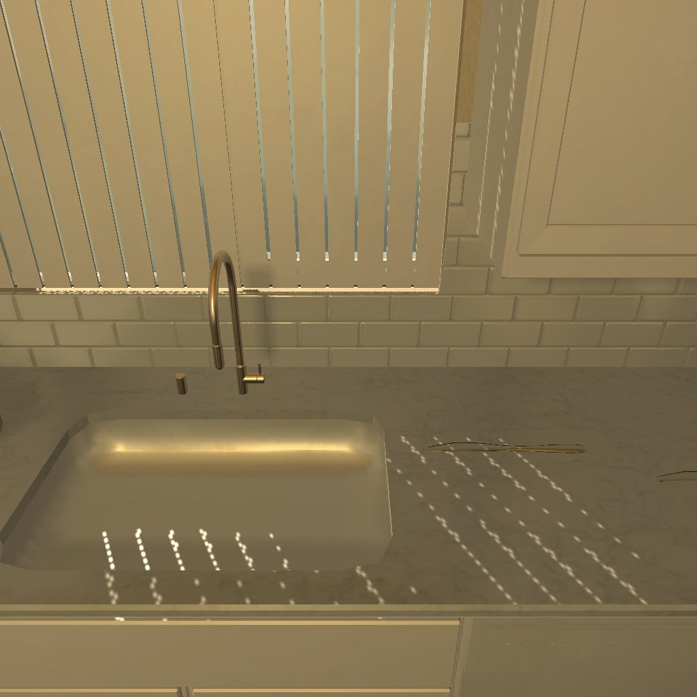

---------------------------------------------------------task: 10---------------------------------------------------------
--------------------------------------------------------------------------------------------------------------------------------------------------------------------
--------------------------------------------------------------------------------------------------------------------------------------------------------------------
Step:--------------------------------------------------------------------------16-------------------------------------------------------------------------------
----------------------------------------
VLM Prompt:
Image1:
Image2:
Image3:
**Instruction**
1. Analyze the provided images to identify all visible household objects and compare the difference between images (e.h. whether the object is opened or not and taken on hand or not), focusing on those relevant to the task description "clean some plate and put it in countertop."
2. Use the analysis of images and the task hint "The agent must find an object of the desired type, pick it up, go to a sink or a basin, clean the object with a sink or basin, and then find the correct location to place it and put it down there. The agent does not need to use soap bottle or faucet to clean the object, and the agent just needs to do action that is "clean the object with the sink or sink basin"." to answer the question: what is the most reasonable action in the choices for the task description "clean some plate and put it in countertop"?
3. Decide and write the answer using the template: The answer is: (i): , where i is the real number. If there is no desired object in images, search every place based on **Initial Observation** to find the object. And if no one is exactly correct, choose a similar answer.
**Initial Observation**
You are in the middle of a room. Looking quickly around you, you can see cabinet (1-20), toaster (1), microwave (1), garbagecan (1), countertop (1-2), drawer (1-4), stoveburner (1-4), sinkbasin (1), sink (1), fridge (1), diningtable (1), coffeemachine (1)
**Answer Choices**
(1): go to cabinet 1
(2): go to cabinet 2
(3): go to toaster 1
(4): go to cabinet 4
(5): go to cabinet 5
(6): go to microwave 1
(7): go to garbagecan 1
(8): go to countertop 1
(9): go to drawer 1
(10): go to cabinet 6
(11): go to cabinet 7
(12): go to drawer 2
(13): go to stoveburner 1
(14): go to stoveburner 2
(15): go to countertop 2
(16): go to cabinet 8
(17): go to cabinet 9
(18): go to cabinet 10
(19): go to drawer 3
(20): go to drawer 4
(21): go to stoveburner 3
(22): go to stoveburner 4
(23): go to cabinet 11
(24): go to cabinet 12
(25): go to cabinet 13
(26): go to cabinet 14
(27): go to sink 1
(28): go to cabinet 15
(29): go to fridge 1
(30): go to cabinet 16
(31): go to cabinet 17
(32): go to cabinet 18
(33): go to cabinet 19
(34): go to diningtable 1
(35): go to coffeemachine 1
(36): go to cabinet 20
(37): take faucet 1 from sinkbasin 1
(38): take butterknife 1 from sinkbasin 1
(39): take butterknife 2 from sinkbasin 1
(40): take lettuce 1 from sinkbasin 1
(41): examine sinkbasin 1
**Answer**
Let's think step by step by following the instructions.
----------------------------------------
----------------------------------------
Original Response:
Image Analysis:
- Image 1 and 2 appear to be the same and do not show any visible household objects relevant to the task description.
- Image 3 shows a sink with a faucet and a sink basin. There is light coming through blinds or a window, creating patterns on the countertop surface. There are no visible plates or objects that need cleaning.
Task Hint Analysis:
According to the task hint, the agent needs to find a plate, clean it in the sink or sink basin, and then place it on the countertop. Since there are no plates visible in the images, the agent must search for a plate based on the initial observation.
Initial Observation Analysis:
The initial observation lists several cabinets, which are common places to find plates. Since the agent needs to find a plate, it is most reasonable to start searching in the cabinets.
Answer:
The answer is: (1): go to cabinet 1. If the plate is not found in cabinet 1, the agent should continue searching in the other cabinets sequentially until a plate is found. Once the plate is found, the agent should then follow the task instructions to clean it in the sink or sink basin and place it on the countertop.
----------------------------------------
----------------------------------------
>>> Refine Original VLM Response and Get Pure Action: go to cabinet 1
----------------------------------------
-----------------------------------------------------------------
Running time: 19.429243564605713 seconds
Total Money: 5.391180000000005
-----------------------------------------------------------------
-----------------------------------------------------------------
Text Observation:You arrive at loc 0. The cabinet 1 is open. On the cabinet 1, you see nothing.
-----------------------------------------------------------------
UNSUCCEED